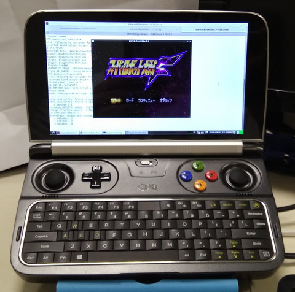

$ cd $ git clone https://github.com/notaz/pcsx_rearmed $ cd pcsx_rearmed $ git submodule update --init --recursive
支援拉伸顯示
$ vim frontend/libpicofe/plat_sdl.c +246
plat_sdl_overlay->hw_overlay = 1;
if (plat_sdl_overlay->hw_overlay)
overlay_works = 1;
else
fprintf(stderr, "warning: video overlay is not hardware accelerated, "
"not going to use it.\n");
SDL_FreeYUVOverlay(plat_sdl_overlay);
plat_sdl_overlay = NULL;
編譯
$ ./configure $ make -j4 $ ./pcsx
完成
